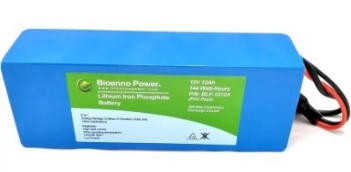
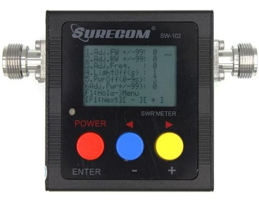
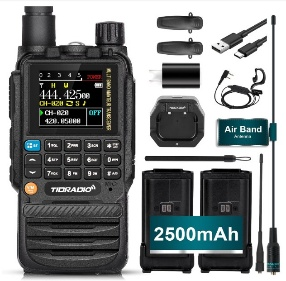
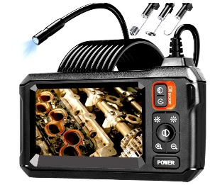
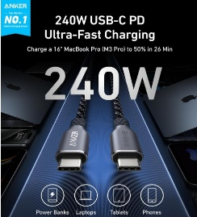

Home › Meetings › November 2026
November Monthly Meeting
Friday, 6 November 2026
Scalable Phased Arrays with QuadRF
- Time
- 7:00 PM Pacific Time
- Presenter
- Roy Gross KM6EOO
Join on Zoom or dial +1 669 900 6833, meeting ID 821 4344 5051
Details
Phased arrays are a core technology for RF professionals: direction finding, beamforming, interferometry, imaging, and MIMO are essentials of modern wireless engineering. Until now, these capabilities have been prohibitively expensive for radio amateurs. Learn how the QuadRF—a low-cost, open-source, and highly scalable phased array SDR—brings spatial wireless exploration to amateur radio. We will break down the radio's unique Raspberry Pi-based architecture, discuss clever DSP techniques, and explore its many applications. See the QuadRF live in action as a real-time AR radio camera, and discover its potential for mesh networks, data links, sensing, and even a 240-element array for moonbounce.
Roy is an undergrad studying electrical engineering at UC Santa Barbara, and building phased arrays with ScaleRF. He attended his first PAARA meeting in fifth grade, and got his ticket, and callsign KM6EOO, soon after. Roy enjoys homebrewing antennas and radios, with particular interest in SDRs and phased arrays. He also enjoys biking and hiking to operate HF portable.
Raffle

1st prizeBioenno Power 12V 12Ah LiFePO4 Battery
2nd prizeSurecom SW-102 125-525Mhz Power & SWR Meter
3rd prizeTIDRADIO TD-H3 Multi-Band Ham Radio
4th prizeEndoscope Camera
5th prizeAnker Prime USB C to USB C Cable, 240W (3 ft)
About club meetings
The Palo Alto Amateur Radio Association meets on the 1st Friday of the month at 7:00 pm (except when the first Friday lands on a holiday, when it typically moves to the 2nd Friday).
Where
Room H6, Cubberley Community Center
4000 Middlefield Road, Palo Alto, CA 94303
(650) 329-2418
After the meeting
Many members gather for beer, pizza, and eyeball QSO at Round Table Pizza, 702 Colorado Ave in Palo Alto.
Board meetings
The PAARA Board meets on the 3rd Wednesday of every month at 7:00 pm by video conference. Any PAARA member is welcome to attend.
Recordings
Monthly presentations since 2021 are on each meeting's page and on our YouTube channel.
Past meetings
- Oct 2026All-Year DX Contest Video
- Sep 2026Radio Direction Finding - History and Techniques VideoBenjamin Friedlander AD6JA
- Aug 2026Antenna design, efficiency, and portability VideoGreg Mihran, KJ6ER
- Jul 2026Multiple Topics VideoJustin, AI6YM; Ben, KN6UBF; Connie, W6EFI
- Jun 2026The California Historical Radio Society: Preserving the Foundations of Modern Communication VideoRachel Lee